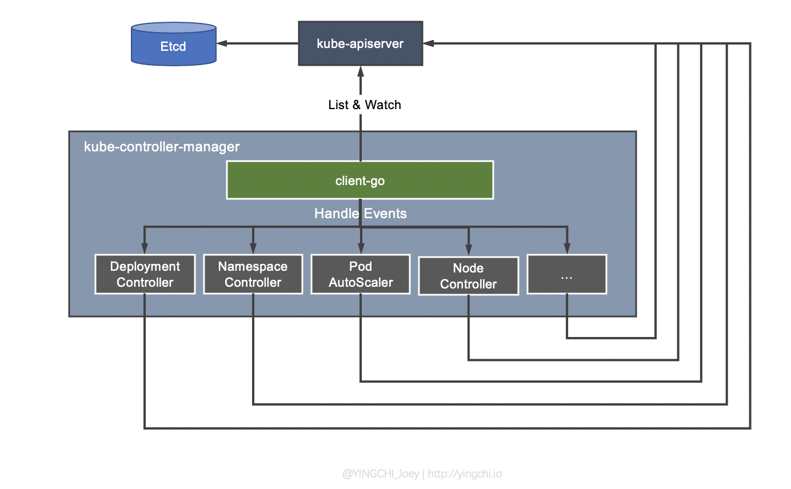
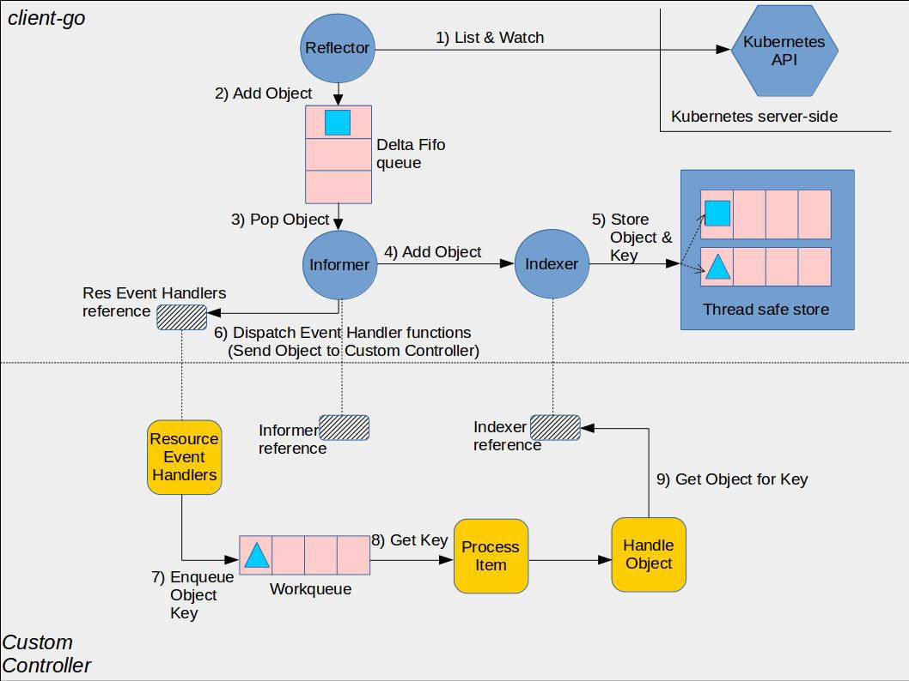
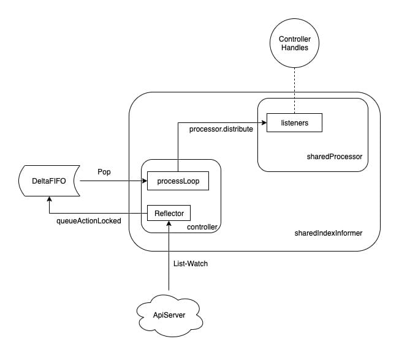

解读 kubernetes Controller Manager 工作原理
kubernetes master 节点最重要的三个组件是：kube-apiserver、kube-controller-manager、kube-scheduler，分别负责 kubernetes 集群的资源访问入口、集群状态管理、资源调度。
这篇文章的主角就是其中的 kube-controller-manager 组件，分析一下它以及其核心组件 informer 是如何有效管理集群状态的。
Controller Manager & Controller 工作原理概述
我们都知道 kubernetes 中管理资源的方式比较简单，通常就是写一个 YAML 清单，简单的可以通过 kubectl 命令直接解决，在这个过程中，我们定义了某个资源的「期望状态」，比如 YAML 清单文件中的 spec 字段，Deployment 的 YAML 中的 spec 字段可能定义了期望的 replicas，我们期望集群的某个 pod 的副本数维持在某个数量上，当我们提交清单给集群，kubernetes 会在一段时间内将集群中的某些资源调整至我们期望的状态；亦或是另一个场景，集群中某个 Pod 挂掉了，或者我们将 Pod 从某个 Worker Node 上驱逐了，然后我们没有做任何操作，Pod 又会自动重建，并且达到指定的副本数，这是很常见的场景。
上面说的这些资源的状态管理是由谁实现的呢？没错，就是 Controller Manager，Controller Manager 是 Kubernetes 的灵魂组件之一，可以说通过定义资源期望状态实现集群资源编排管理的思想其底层就是依赖 Controller Manager 这个组件。
Controller Manager 的作用简而言之：保证集群中各种资源的实际状态（status）和用户定义的期望状态（spec）一致。
按照官方定义：kube-controller-manager 运行控制器，它们是处理集群中常规任务的后台线程。
Controller Manager 就是集群内部的管理控制中心，刚才说 Controller Manager 的作用是保证集群中各种资源的实际状态和用户定义的期望状态一致，但是如果出现不一致的情况怎么办？是由 Controller Manager 自己来对各种资源进行调整吗？
这时候就要说到 Controller 的概念了，之所以叫 Controller Manager，是因为 Controller Manager 由负责不同资源的多个 Controller 构成，如 Deployment Controller、Node Controller、Namespace Controller、Service Controller 等，这些 Controllers 各自明确分工负责集群内资源的管理。

如图，Controller Manager 发现资源的实际状态和期望状态有偏差之后，会触发相应 Controller 注册的 Event Handler，让它们去根据资源本身的特点进行调整。
比如当通过 Deployment 创建的某个 Pod 发生异常退出时，Deployment Controller 便会接受并处理该退出的 Event，并创建新的 Pod 来维持期望副本数。这样设计的原因也很好理解，可以将 Controller Manager 与具体的状态管理工作相解耦，因为不同的资源对于状态的管理多种多样，Deployment Controller 关注 Pod 副本数，而 Service 则关注 Service 的 IP、Port 等等。
client-go
Controller Manager 中一个很关键的部分就是 client-go，client-go 在 controller manager 中起到向 controllers 进行事件分发的作用。目前 client-go 已经被单独抽取出来成为一个项目了，除了在 kubernetes 中经常被用到，在 kubernetes 的二次开发过程中会经常用到 client-go，比如可以通过 client-go 开发自定义 controller。
client-go 包中一个非常核心的工具就是 informer，informer 可以让与 kube-apiserver 的交互更加优雅。
informer 主要功能可以概括为两点：
- 资源数据缓存功能，缓解对 kube-apiserver 的访问压力；
- 资源事件分发，触发事先注册好的 ResourceEventHandler；
Informer 另外一块内容在于提供了事件 handler 机制，并会触发回调，这样 Controller 就可以基于回调处理具体业务逻辑。因为 Informer 通过 List、Watch 机制可以监控到所有资源的所有事件，因此只要给 Informer 添加ResourceEventHandler 实例的回调函数实例取实现 OnAdd(obj interface{})、 OnUpdate(oldObj, newObj interface{}) 和 OnDelete(obj interface{}) 这三个方法，就可以处理好资源的创建、更新和删除操作
client-go 工作机制

上图是官方给出的 client-go 与自定义 controller 的实现原理。
Reflactor
反射器，具有以下几个功能：
- 采用 List、Watch 机制与 kube-apiserver 交互，List 短连接获取全量数据，Watch 长连接获取增量数据；
- 可以 Watch 任何资源包括 CRD；
- Watch 到的增量 Object 添加到 Delta FIFO 队列，然后 Informer 会从队列里面取数据;
Informer
Informer 是 client-go 中较为核心的一个模块，其主要作用包括如下两个方面：
- 同步数据到本地缓存。Informer 会不断读取 Delta FIFO 队列中的 Object，在触发事件回调之前先更新本地的 store，如果是新增 Object，如果事件类型是 Added（添加对象），那么 Informer 会通过 Indexer 的库把这个增量里的 API 对象保存到本地的缓存中，并为它创建索引。之后通过 Lister 对资源进行 List / Get 操作时会直接读取本地的 store 缓存，通过这种方式避免对 kube-apiserver 的大量不必要请求，缓解其访问压力；
- 根据对应的事件类型，触发事先注册好的 ResourceEventHandler。client-go 的 informer 模块启动时会创建一个 shardProcessor，各种 controller（如 Deployment Controller、自定义 Controller…）的事件 handler 注册到 informer 的时候会转换为一个 processorListener 实例，然后 processorListener 会被 append 到 shardProcessor 的 Listeners 切片中，shardProcessor 会管理这些 listeners。
processorListener 的重要作用就是当事件到来时触发对应的处理方法，因此不停地从 nextCh 中拿到事件并执行对应的 handler。sharedProcessor 的职责便是管理所有的 Handler 以及分发事件，而真正做分发工作的是 distribute 方法。
梳理一下这中间的过程：
- Controller 将 Handler 注册给 Informer；
- Informer 通过
sharedProcessor维护了所有转换为 processorListener 的 Handler； - Informer 收到事件时，通过
sharedProcessor.distribute将事件分发下去； - Controller 被触发对应的 Handler 来处理自己的逻辑。

Reflactor 启动后会执行一个 processLoop 死循环，Loop 中不停地将 Delta FIFO 队列中的事件 Pop 出来，Pop 时会取出该资源的所有事件，并交给 sharedIndexInformer 的 HandleDeltas 方法（创建 controller 时赋值给了 config.Process，传递到 Pop 参数的处理函数中 Pop(PopProcessFunc(c.config.Process))），HandleDeltas 调用了 processor.distribute 完成事件的分发。
在注册的 ResourceEventHandler 回调函数中，只是做了一些很简单的过滤，然后将关心变更的 Object 放到 workqueue 里面。之后 Controller 从 workqueue 里面取出 Object，启动一个 worker 来执行自己的业务逻辑，通常是对比资源的当前运行状态与期望状态，做出相应的处理，实现运行状态向期望状态的收敛。
注意，在 worker 中就可以使用 lister 来获取 resource，这个时候不需要频繁的访问 kube-apiserver 了，对于资源的 List / Get 会直接访问 informer 本地 store 缓存，apiserver 中资源的的变更都会反映到这个缓存之中。同时，LocalStore 会周期性地把所有的 Pod 信息重新放到 DeltaFIFO 中。
参考
- http://dockone.io/article/9557
- https://www.cnblogs.com/lovezbs/p/13172842.html
- https://zhuanlan.zhihu.com/p/59660536
- https://www.jianshu.com/p/1e2e686fe363
- https://www.lizenghai.com/archives/50034.html#1
- https://www.jianshu.com/p/d17f70369c35
- https://www.jianshu.com/p/ac9179007fe2
- https://blog.hdls.me/15763918313590.html
- https://blog.ihypo.net/15763910382218.html